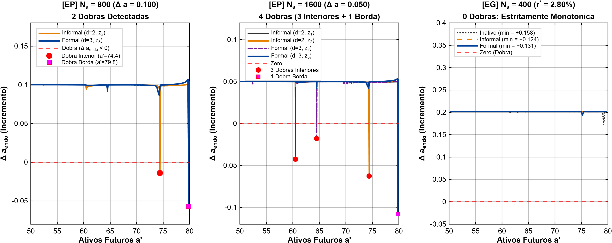
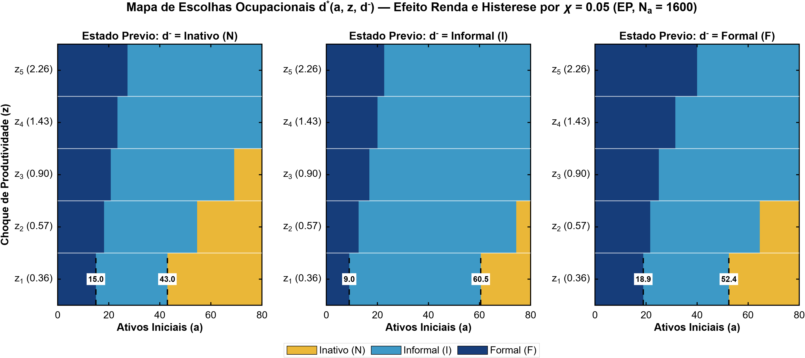
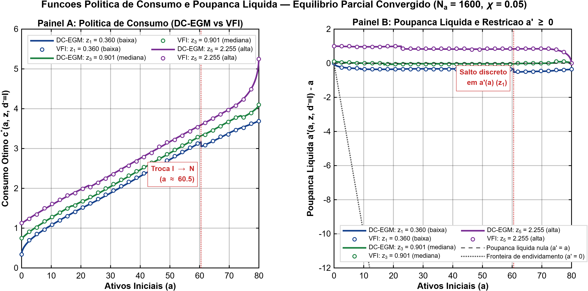
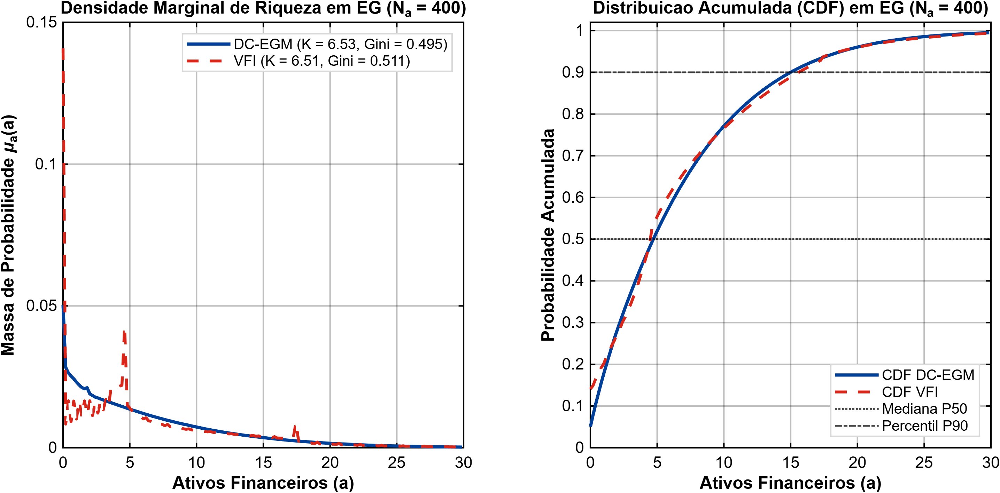

Introdução e Motivação
A macroeconomia quantitativa com modelos de agentes heterogêneos e mercados incompletos (na tradição de Bewley, Huggett e Aiyagari) defronta-se frequentemente com elevado custo computacional em espaços de estados contínuos e discretos. Quando os modelos incorporam escolhas discretas (como participação no mercado de trabalho, formalidade versus informalidade ou aposentadoria) juntamente com acumulação contínua de riqueza, a função valor deixa de ser globalmente côncava e suave.
Tradicionalmente, a literatura recorre à Iteração da Função Valor (VFI) com busca exaustiva sobre grades discretas em $(a, a')$, cujo custo cresce quadraticamente com a resolução da malha de ativos e onera a busca pelo equilíbrio geral dos preços de fatores.
Neste projeto de pesquisa, implementamos e comparamos dois métodos numéricos em um modelo canônico discreto-contínuo:
- Value Function Iteration (VFI) vetorizada clássica;
- Discrete-Continuous Endogenous Grid Method (DC-EGM) estendido com poda geométrica por Upper Envelope (Iskhakov et al., 2017), que reduz substancialmente o custo da busca contínua ao inverter analiticamente a Equação de Euler — embora não elimine a maldição da dimensionalidade em modelos com espaços de estados mais amplos.
Investigamos o comportamento do DC-EGM sob escolhas ocupacionais determinísticas ($s_\varepsilon = 0$) e custos fixos de transição ($\bar\chi = 0{,}05$). Os experimentos identificam dobras na grade endógena em determinadas configurações de equilíbrio parcial, a partir de $N_a = 800$. Em termos computacionais, o DC-EGM apresenta desempenho superior à VFI nas grades mais refinadas — alcançando speedup de 7,65x em equilíbrio parcial ($N_a = 1600$) e de 3,49x no experimento de equilíbrio geral ($N_a = 400$) —, mas mostra desempenho inferior em equilíbrio parcial na malha mais grossa ($N_a = 400$, 0,58x, sem convergência estrita a $10^{-7}$ em 1.500 iterações). Os resultados evidenciam que desempenho e precisão do método dependem da discretização e das condições econômicas consideradas.
Ambiente Econômico e Problema Dinâmico
A economia é habitada por um contínuo de famílias heterogêneas e uma firma representativa com tecnologia Cobb-Douglas em equilíbrio competitivo estacionário:
- Preferências: Função utilidade CRRA $u(c) = \frac{c^{1-\sigma} - 1}{1 - \sigma}$ com aversão relativa ao risco $\sigma = 2{,}00$ e fator de desconto intertemporal $\beta = 0{,}96$.
- Decisão Contínua: Poupança ótima em ativos líquidos $a' \in [0, \bar{a}]$ com $\bar{a} = 80{,}00$, sujeita à restrição estrita de endividamento (borrowing constraint).
- Decisão Discreta Ocupacional ($d \in \{N, I, F\}$):
- $d = N$: Inatividade ($y_N = 0$, desutilidade $\psi_N = 0{,}00$);
- $d = I$: Setor Informal ($y_I(z) = \kappa w z$, com $\kappa = 0{,}72$, sem tributação, desutilidade $\psi_I = 0{,}05$);
- $d = F$: Setor Formal ($y_F(z) = (1 - \tau) w z$, com $\tau = 0{,}20$, desutilidade $\psi_F = 0{,}08$).
- Fricção de Mercado: Custo fixo de transição $\chi(d, d^-) = \bar\chi \cdot \mathbf{1}_{\{d \neq d^-\}}$, com $\bar\chi = 0{,}05$ em unidades de utilidade.
- Risco Idiossincrático: Produtividade $z$ governada por processo AR(1) em log discretizado via método de Rouwenhorst com persistência $\rho = 0{,}90$, desvio-padrão da inovação $\sigma_\varepsilon = 0{,}20$ e $N_z = 5$ estados (normalizados para $\mathbb{E}[z] = 1$).
- Tecnologia Agregada: Função de produção $Y = A K^\alpha L^{1-\alpha}$ com $A = 1{,}00$, $\alpha = 0{,}36$ e depreciação anual $\delta = 8\%$.
O Problema Intertemporal do Agente
Como a escolha ocupacional corrente implica custo de transição caso difira do estado anterior, a ocupação passada $d^-$ integra o vetor de estados individuais $(a, z, d^-)$. O problema recursivo do agente escreve-se como:
em que, condicionada a cada alternativa discreta $d$, a função valor contínua satisfaz:
sujeito à restrição orçamentária e à positividade do consumo:
Métodos Numéricos e Diagnóstico de Não-Concavidade (EP vs. EG)
Para cada escolha discreta $d \in \{N, I, F\}$ e estado exógeno $z$, o método inverte analiticamente a Equação de Euler sobre a grade de ativos futuros $a'$, definindo os pontos endógenos:
A solução por DC-EGM estrutura-se em três etapas encadeadas:
- Resolve separadamente o problema contínuo condicionado a cada alternativa discreta $d \in \{N, I, F\}$, sem otimização numérica sobre $a'$.
- Os custos fixos de transição $\bar\chi$ e o operador $\max_d$ podem gerar cruzamentos entre as funções valor condicionais $v_d(a)$, produzindo pontos de quina (kinks) nos limiares de indiferença ocupacional. Dependendo das inclinações relativas dos ramos antes e depois do cruzamento, esses encontros podem gerar regiões localmente não côncavas, identificadas numericamente pelo diagnóstico de segunda diferença finita positiva ($\Delta^2 V > 0$ sob a convenção padrão $V_{i+1} - 2V_i + V_{i-1} > 0$), como ilustra a Figura 1.
- Quando a grade endógena $a_{\text{endog}}(a')$ deixa de ser monotônica ($d a_{\text{endog}}/d a' < 0$), a correspondência torna-se multi-valorada. Nesse contexto, o operador Upper Envelope desempenha duas funções complementares: seleciona a alternativa discreta que maximiza a função valor em cada ponto e identifica, entre os múltiplos segmentos gerados na grade endógena, aqueles que pertencem à envoltória superior. Esse procedimento preserva a solução global mesmo na presença de não-concavidades locais, sem impor artificialmente a concavidade da função valor resultante.

Figura 1: Funções valor condicionais e envelope superior exibindo quinas nos pontos de indiferença ocupacional.

Figura 3: Diagnóstico das grades endógenas em equilíbrio parcial sob custos fixos de transição ocupacional.

Figura 14: Anatomia do algoritmo Upper Envelope na dobra interior ($z_2, d=I, N_a=1600$), destacando o descarte de ramos subótimos.
Contraste entre Equilíbrio Parcial e Equilíbrio Geral: Os experimentos de equilíbrio parcial ($r = 4{,}1667\%$, $w = 1{,}1781$) identificam dobras na grade endógena a partir de $N_a = 800$, com aumento de ocorrências sob refinamento da discretização: nenhuma dobra discreta em $N_a = 400$, duas dobras em $N_a = 800$ e quatro dobras em $N_a = 1600$ (três interiores em torno de $a' \approx 60{,}5$, $64{,}5$ e $74{,}4$ e uma próxima à fronteira superior em $a' \in [78{,}55;\, 80{,}0]$). Entretanto, essas dobras não são uma propriedade universal da parametrização: na solução de equilíbrio geral examinada com $N_a = 400$ ($r^* \approx 2{,}80\%$), todas as grades endógenas permaneceram estritamente monotônicas, com incrementos mínimos positivos de $+0{,}1583$ na inatividade, $+0{,}1237$ na informalidade e $+0{,}1313$ na formalidade.
Resultados Computacionais e Escalabilidade
1. Refinamento Multigrade no Modelo Canônico ($\bar\chi = 0{,}05$, EP)
| $N_a$ | Iter. (VFI / DC) | Conv. DC ($10^{-7}$) | VFI (s) | DC-EGM (s) | Speedup | Conc. $d^*$ | Dobras |
|---|---|---|---|---|---|---|---|
| 400 | 376 / 1.500 | Não (teto) | 2,914 | 4,990 | 0,58x | 99,27 % | 0 |
| 800 | 376 / 376 | Sim | 10,591 | 2,530 | 4,19x | 99,78 % | 2 |
| 1.600 | 376 / 376 | Sim | 39,749 | 5,199 | 7,65x | 99,97 % | 4 |
- Na malha básica ($N_a = 400$), o DC-EGM leva 4,990 s contra 2,914 s da VFI (0,58x) e atinge o teto de 1.500 iterações sem alcançar a tolerância de convergência ($10^{-7}$), encerrando com resíduo final de Cauchy $\|\Delta V\|_\infty = 2{,}09 \times 10^{-6}$ (e $\|\Delta c\|_\infty = 5{,}80 \times 10^{-4}$).
- A partir de $N_a = 800$, ambos os métodos convergem estritamente em 376 iterações; em $N_a = 1600$ (24.000 pontos no espaço de estados), o DC-EGM cai de 39,749 s para 5,199 s (speedup de 7,65x), mantendo concordância ocupacional de 99,97% e diferenças em norma do supremo $\|\Delta V\|_\infty = 0{,}0156$ e $\|\Delta c\|_\infty = 0{,}0525$.
Esses números mostram que o DC-EGM não é automaticamente mais rápido ou mais preciso em qualquer configuração: em grades grossas sob escolhas determinísticas e custos fixos ($N_a = 400$), a discretização em torno dos pontos de quina dificulta a convergência iterativa do ramo contínuo, ao passo que o refinamento para $N_a \ge 800$ estabiliza a convergência e libera o ganho escalável da inversão analítica frente ao custo quadrático da VFI.

Figura 12: Mapa espacial de escolha ocupacional ótima $d^*(a, z, d^-)$ e regiões de histerese ($N_a = 1600$, concordância de 99,97% com a VFI).
2. Benchmark Histórico Complementar ($\bar\chi = 0$, Modelo Preliminar)
Em experimento complementar separado sobre o modelo preliminar sem custos de transição ($\bar\chi = 0$, $N_a = 400$), o DC-EGM Otimizado obtém mediana de 1,661 s (4,23x mais rápido que a VFI vetorizada de referência) e resíduo médio na Equação de Euler de $7{,}18 \times 10^{-7}$, frente a $1{,}88 \times 10^{-3}$ mesmo na VFI refinada com 3.200 pontos candidatos (91,149 s).
Ressalva metodológica: Esses valores de erro de Euler pertencem exclusivamente ao benchmark preliminar sem custos de transição ($\bar\chi = 0$) e não devem ser interpretados como medida direta de acurácia do modelo canônico ($\bar\chi = 0{,}05$). Na presença de escolhas discretas e não-concavidades locais, a precisão numérica exige avaliação diferenciada nas vizinhanças de restrições de liquidez e limiares de transição ocupacional.

Figura 16: Benchmark histórico complementar ($\bar\chi = 0$, modelo preliminar): fronteira tempo de execução versus erro médio de Euler entre 9 implementações.
Equilíbrio Geral Competitivo e Distribuição Estacionária ($N_a = 400$)
Os resultados a seguir representam as soluções numéricas obtidas pelos dois procedimentos de busca do equilíbrio geral, que não encerram com o mesmo grau de precisão no fechamento do mercado de capitais: o DC-EGM atende à tolerância estabelecida para o excesso relativo de capital ($< 10^{-4}$), ao passo que a VFI encerra a bisseção pelo critério de largura do intervalo com resíduo superior à tolerância. Embora as diferenças relativas nos agregados reais fiquem abaixo de $0{,}5\%$ (com discrepância de $0{,}633\%$, ou $1{,}8\text{ pb}$, na taxa de juros $r^*$), essa proximidade nos agregados não implica proximidade distributiva equivalente: o coeficiente de Gini da riqueza diverge em $3{,}38\%$ e a massa concentrada na restrição de liquidez varia expressivamente.
| Variável / Critério | DC-EGM | VFI Vetorizada | Discrepância / Status |
|---|---|---|---|
| Razão Capital-Trabalho ($k^*$) | 6,564697 | 6,547806 | 0,258 % |
| Taxa Real de Juros ($r^*$) | 2,7966 % | 2,8144 % | 0,633 % (1,8 pb) |
| Salário Real Competitivo ($w^*$) | 1,260020 | 1,258851 | 0,093 % |
| Estoque Agregado de Capital ($K^*$) | 6,5349 | 6,5147 | 0,310 % |
| Trabalho Efetivo Agregado ($L^*$) | 0,9956 | 0,9947 | 0,090 % |
| Produto Agregado ($Y^*$) | 1,9600 | 1,9567 | 0,169 % |
| Consumo Agregado ($C^*$) | 1,1892 | 1,1885 | 0,055 % |
| Investimento Agregado ($I^*$) | 0,5228 | 0,5212 | 0,309 % |
| Gasto do Governo ($G^*$) | 0,2480 | 0,2470 | 0,418 % |
| Coeficiente de Gini de Riqueza | 0,4948 | 0,5115 | 3,38 % |
| Participação no Setor Formal ($M_F$) | 98,28 % | 97,96 % | 0,32 pp |
| Resíduo Relativo de Mercado ($\lvert f(k)\rvert/k$) | $9{,}76 \times 10^{-5}$ | $2{,}88 \times 10^{-4}$ | Tol. $10^{-4}$: Sim (DC) / Não (VFI) |
| Resíduo Contábil de Walras | $-1{,}68 \times 10^{-8}$ | $-2{,}47 \times 10^{-8}$ | Consistência contábil |
| Tempo Total em EG (Iter.) | 7,61 s (11 iter.) | 26,60 s (15 iter.) | 3,49x mais rápido |
Critérios de fechamento do equilíbrio geral: Embora produzam agregados próximos, os algoritmos não encerram com a mesma precisão no fechamento do mercado de capitais. Em equilibrio_geral_dc_egm.m, a bisseção encerra exclusivamente pelo excesso de oferta de capital ($|f(k)|/k < 10^{-4}$ ou $|f(k)| < 10^{-4}$), atingindo $9{,}76 \times 10^{-5}$ na 11ª iteração. Em equilibrio_geral_vfi.m, há uma condição adicional de largura do intervalo ($|k_b - k_a| < 10^{-4}$), o que encerra a busca na 15ª iteração pela contração do intervalo $[k_a, k_b]$, com resíduo relativo de mercado ainda em $2{,}88 \times 10^{-4}$ (acima da tolerância de $10^{-4}$). O resíduo de Walras ($Y - C - I - G$) verifica apenas a identidade contábil das restrições orçamentárias e produtivas, não substituindo a condição de equilíbrio do mercado de capitais.
Discrepâncias de políticas e interpretação econômica em EG ($N_a = 400$) vs. EP ($N_a = 1600$): Economicamente, a taxa real de juros ligeiramente inferior obtida no DC-EGM ($2{,}7966\%$ contra $2{,}8144\%$ na VFI) associa-se a um estoque agregado de capital $0{,}310\%$ maior ($K^* = 6{,}5349$ vs. $6{,}5147$) e a uma menor concentração de riqueza na base e no Gini ($0{,}4948$ vs. $0{,}5115$), enquanto salário real e trabalho efetivo variam abaixo de $0{,}10\%$. No plano numérico, as diferenças em norma do supremo entre as soluções finais dos dois métodos no EG atingem $\|\Delta V\|_\infty = 0{,}2419$, $\|\Delta c\|_\infty = 0{,}1606$ e $\|\Delta a'\|_\infty = 0{,}1611$ (exibidas na aba Políticas (EG) do laboratório abaixo). Esses valores medem divergência entre métodos — não erros de convergência — e superam as diferenças registradas em EP com $N_a = 1600$ ($\|\Delta V\|_\infty = 0{,}0156$; $\|\Delta c\|_\infty = 0{,}0525$) porque o EG combina malha quatro vezes mais grossa ($\Delta a \approx 0{,}20$ contra $0{,}05$) com preços competitivos finais distintos em $1{,}8\text{ pb}$, enquanto o experimento multigrade em EP compara os dois métodos exatamente aos mesmos preços ($r = 4{,}1667\%$).

Figura 4: Comparação entre VFI e DC-EGM na função valor $V(a,z,d^-)$ e na política de poupança $a'(a,z,d^-)$ em equilíbrio geral (malha uniforme $a \in [0, 80]$).

Figura 11: Políticas ótimas de consumo $c^*(a)$ e poupança líquida $a'(a)-a$ ($N_a=1600$), evidenciando suavização precaucional e restrição de liquidez.

Figura 6: Densidade marginal estacionária de ativos exibindo a concentração de massa na restrição $a=0$.
- Concentração na Base e Efeito da Discretização: A distribuição estacionária obtida via método de Young (2010) apresenta massa acumulada na restrição de liquidez $a = 0$ ($5{,}03\%$ no DC-EGM e $14{,}09\%$ na VFI em equilíbrio geral) e diferença no coeficiente de Gini ($0{,}4948$ vs. $0{,}5115$). Essa discrepância distributiva — bem como os picos localizados visíveis na densidade da VFI — está associada tanto às diferenças entre as políticas ótimas de poupança e os preços de equilíbrio ($r^*$) gerados pelos dois métodos quanto à forma como essas políticas são projetadas sobre a grade de ativos em
distribuicao_estacionaria.m. Na VFI, a escolha de ativos futuros restringe-se aos nós da malha ($\omega = 1$ na loteria linear), enquanto o DC-EGM permite escolhas contínuas posteriormente interpoladas entre nós adjacentes ($\omega \in (0, 1)$). Embora essa diferença de representação contribua para concentrar massa em pontos discretos da VFI e suavizar $\mu(a)$ no DC-EGM, não é possível atribuir isoladamente toda a discrepância observada ao procedimento de interpolação. - Composição Ocupacional (EP $\to$ EG): Sob os preços iniciais de equilíbrio parcial ($r = 4{,}1667\%$, $w = 1{,}1781$), a informalidade concentra $86{,}99\%$ dos agentes. Nos preços competitivos de equilíbrio geral ($w^* = 1{,}2600$, $r^* = 2{,}80\%$), a participação formal eleva-se para $98{,}28\%$ no DC-EGM ($97{,}96\%$ na VFI). Esse percentual próximo de $98\%$ é uma propriedade numérica da parametrização e dos preços competitivos adotados no modelo, não devendo ser interpretado como estimativa empírica da composição ocupacional observada no Brasil.
Laboratório Numérico Interativo (JS/HTML)
Explore diretamente no navegador as funções políticas de equilíbrio geral, as dobras e o descarte de ramos subótimos no Upper Envelope ($N_a = 1600$), a distribuição estacionária de riqueza e os benchmarks multigrade e histórico de Euler. Por eficiência e fidelidade aos experimentos, o painel carrega localmente matrizes e séries numéricas pré-computadas diretamente em MATLAB (dc_egm_vfi_interactive.json), renderizadas em tempo real em HTML5 sem reexecutar o solver iterativo no navegador.
Limitações do Estudo
- Dependência da discretização em $N_a = 400$: No experimento de equilíbrio parcial, o DC-EGM atingiu o limite de 1.500 iterações com diferença de $2{,}09 \times 10^{-6} > 10^{-7}$, alcançando convergência estrita apenas a partir de $N_a = 800$.
- Não-concavidade sensível a preços e malha: A ocorrência de dobras na grade endógena manifestou-se no experimento de EP ($N_a \in \{800, 1600\}$), mas esteve ausente na solução de EG examinada com $N_a = 400$.
- Acurácia não uniforme: Sob custos de transição ($\bar\chi = 0{,}05$), erros numéricos variam pelo espaço de estados e tendem a concentrar-se próximo à restrição $a = 0$ e aos limiares de mudança ocupacional.
- Natureza empírica do benchmark: Os tempos medidos refletem esta implementação vetorizada específica em MATLAB e não constituem prova de complexidade assintótica universal.
- Refinamento conjunto na VFI: No comparativo multigrade, estado ($a$) e controle ($a'$) são refinados simultaneamente com $N_a$, impossibilitando isolar separadamente o efeito do refinamento da grade de estados daquele da grade de controles sobre o custo quadrático da VFI frente ao DC-EGM.
- Calibração ilustrativa: Os agregados e participações setoriais decorrem da parametrização canônica definida, sem estimação econométrica aplicada à economia brasileira.
Materiais Didáticos, Reprodutibilidade e Downloads
Projeto validado em MATLAB R2026b Update 1 (compatível com R2020b+), com ponto de entrada único executar_projeto.m na raiz de ENTREGA_PROFESSOR/ e bateria de 11 testes automatizados formais aprovados (log_execucao_modelo.txt). Os slides e os códigos-fonte do pacote publicado estão disponíveis abaixo:
- 📊 Slides de Apresentação Executiva Beamer 16:9 (PDF): Versão executiva (18 slides).
- 🖥️ Slides — Apresentação Completa Beamer 16:9 (PDF): Versão expandida com teoria, KKT, implementação MATLAB e figuras (45 slides).
- 📦 Códigos MATLAB (.zip): Estrutura modular com ponto de entrada único
executar_projeto.mna raiz e subpastas temáticas (parametros/ecodigos/).
Referências Bibliográficas
- Aiyagari, S. R. (1994). Uninsured Idiosyncratic Risk and Aggregate Saving. Quarterly Journal of Economics, 109(3), 659–684.
- Carroll, C. D. (2006). The Method of Endogenously Constrained Grids for Solving Dynamic Stochastic Optimization Problems. Economics Letters, 91(3), 312–320.
- Huggett, M. (1993). The Risk-Free Rate in Heterogeneous-Agent Incomplete-Insurance Economies. Journal of Economic Dynamics and Control, 17(5-6), 953–969.
- Iskhakov, F., Jørgensen, T. H., Rust, J., & Schjerning, B. (2017). The Endogenous Grid Method for Discrete-Continuous Dynamic Choice Models with (or without) Taste Shocks. Quantitative Economics, 8(2), 317–365.
- Young, E. R. (2010). Solving the Incomplete Markets Model with Aggregate Uncertainty Using the Krusell-Smith Algorithm and Non-Stochastic Simulations. Journal of Economic Dynamics and Control, 34(1), 36–41.